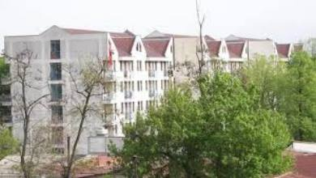
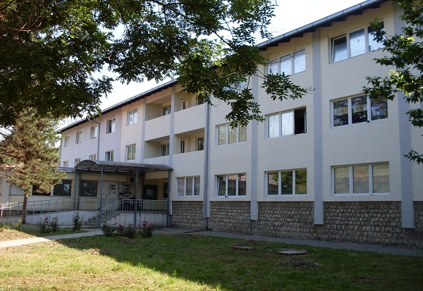
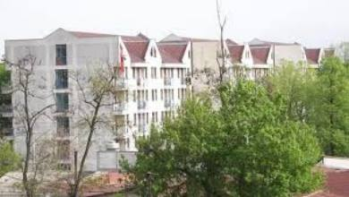
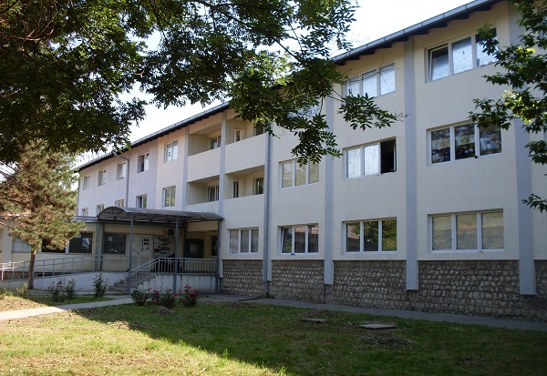

Студентски дом Стив Наумов
Студентската населба Стив Наумов се наоѓа во населбата Автокоманда на булеварот „Александар Македонски“ бб. Во склоп на населбата има двор со зеленило и клупи за одмор и релаксација на студентите.
Оваа населба е составена од 3 згради како и 8 павиљони со вкупен капацитет од 1226 легла. Првите две згради се изградени во 1964-та година,
додека третата зграда е изградена во 1992-ра година. Во 2014-та година беа пуштени во употреба новите павиљони кои се изградени на
местото на поранешните студентски бараки.
Зградите 1 и 2 располагат со еднократни, двокреветни и трикреветни соби со сопствени бањи. Зградата 3 располага со еднокреветни , двокреветни,
трикреветни и брачни соби и заеднички бањи , додека павиљоните само со двокреветни соби и сопствени бањи од кои 6 се наменети за лица
со инвалидитет.
Населбата располага со ресторан и бифе каде студентите можат да го остварат своето право на топол оброк и читална во која можат да ги
подготвуваат своите колоквиуми и испити.
Во непосредна близина на студентската населба се наоѓаат коплексот факултети (Правен, Економски , Филолошки и Филозофски), Земјоделскиот
факултет, Шумарски, Природно математичкиот факултет и Факултет за Ветеринарна медицина.
Во близина се наоѓа и Скопскиот саем каде редовно се одржуваат саеми од различни области, како и забави со диџеи и други изведувачи од
различен тип на музика.
Околу населбата Стив Наумов има неколку автобуски постојки на кои што сообраќаат автобуски линии што ќе Ве поврзат со секој дел од градот:
#b38600
| Автобуска линија | Од | До |
|---|---|---|
| 2 | Сарај | Автокоманда |
| 13 | Железара | Кисела Вода |
| 16 | Железара | Пржино |
| 26 | Сарај | Железара |
| 65 | Ченто | Транспортен Центар |
| 50 | Хиподром | Клинички Центар |
Информации и контакт :
075/286-173
 


